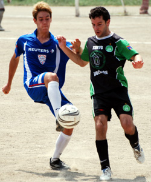
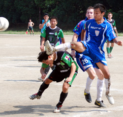

|
OiFuto, Saturday 25th August,
A good, hard fought, competitive game of football to start the season. The one thing confirmed for the Vags today is that we are comfortable in the first division. Over the piece the Hibs probably just edged it and the Vags flagged a bit in the last 15 minutes but it was touch and go for most of the game.
In the baking heat and on the dust bowl of Oi it was never going to be a flowing game and the ball was ferociously difficult to control. This meant that numerous moves were broken down by two strong midfields and chances were few and far between for most of the game.
Early on Alex had an opportunity one on one, but the angle was tight and the keeper did very well to get a hand in as Alex tried to go by. At the other end Hibs had a couple of reasonable chances but shot high and wide. Steve G looked the most likely to score with an acrobatic overhead kick and then a great header from a corner which was superbly headed off the line by the man on the back post.
For most of the second half it was more of the same but as the game headed into the last quarter Hibs began to push. A goal from a free kick was chopped off for a close offside decision and then a few minutes later Vags defence was finally breached with a fine strike from the left edge of the box. Hibs also had a stonking strike come back off the bar.
Credit to the Hibs but I feel they will have to play better than today if they are going to win back their title and credit also to Jorge who refereed the game very well.
Following the game there was a ‘never seen before’ as due to late opening hours a squad of Vags was sat around having a chat for 35 minutes without food or drink. We found out that we are a real boring bunch in these unusual circumstances and will endeavour never to have a repeat of this bizarre experience.
Report by Richard Straughan
|